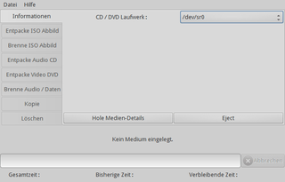
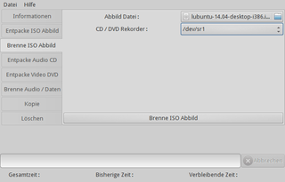

Simpleburn
Dieser Artikel wurde für die folgenden Ubuntu-Versionen getestet:
Ubuntu 16.04 Xenial Xerus
Ubuntu 14.04 Trusty Tahr
Zum Verständnis dieses Artikels sind folgende Seiten hilfreich:
Simpleburn  ist ein minimalistisches CD/DVD-Brennprogramm, das für die Benutzeroberfläche auf die Grafikbibliothek GTK setzt. Es beherrscht unter anderem das Brennen von Daten- und Audio-CDs/DVDs, den Umgang mit wiederbeschreibbaren Datenträgern, das Brennen von ISO-Images sowie das Anfertigen von CD/DVD-Kopien und steht unter der freien Lizenz CeCILL.
ist ein minimalistisches CD/DVD-Brennprogramm, das für die Benutzeroberfläche auf die Grafikbibliothek GTK setzt. Es beherrscht unter anderem das Brennen von Daten- und Audio-CDs/DVDs, den Umgang mit wiederbeschreibbaren Datenträgern, das Brennen von ISO-Images sowie das Anfertigen von CD/DVD-Kopien und steht unter der freien Lizenz CeCILL.
Zusätzlich können Audio-CDs und Video-DVDs ausgelesen, konvertiert und auf der Festplatte gespeichert werden ("Rippen"). Für Fortgeschrittene interessant ist die Aufteilung in zwei Komponenten: einerseits die grafische Benutzeroberfläche (GUI) und verschiedene Shell-Skripte (/usr/bin/simpleburn-...) auf der anderen Seite, die die eigentliche Arbeit im Hintergrund übernehmen. Da die GUI keine Einstellungsmöglichkeiten bietet, können (und müssen) persönliche Vorlieben durch das Bearbeiten der jeweiligen Shell-Skripte umgesetzt werden.
Installation¶
 Das Programm ist ab Ubuntu 14.04 in den offiziellen Paketquellen enthalten. Folgendes Paket muss installiert [1] werden:
Das Programm ist ab Ubuntu 14.04 in den offiziellen Paketquellen enthalten. Folgendes Paket muss installiert [1] werden:
simpleburn (universe)
 mit apturl
mit apturl
Paketliste zum Kopieren:
sudo apt-get install simpleburn
sudo aptitude install simpleburn
PPA¶
Zur Installation unter älteren Ubuntu-Versionen wird ein "Personal Package Archiv" (PPA) [2] benötigt.
Adresszeile zum Hinzufügen des PPAs:
ppa:simpleburn/ppa
Hinweis!
Zusätzliche Fremdquellen können das System gefährden.
Ein PPA unterstützt nicht zwangsläufig alle Ubuntu-Versionen. Weitere Informationen sind der  PPA-Beschreibung des Eigentümers/Teams simpleburn zu entnehmen.
PPA-Beschreibung des Eigentümers/Teams simpleburn zu entnehmen.
Damit Pakete aus dem PPA genutzt werden können, müssen die Paketquellen neu eingelesen werden.
Nach dem Aktualisieren der Paketquellen erfolgt die Installation wie oben angegeben.
Verwendung¶
Hinweis:
Mit der Version 1.7 wurde die Oberfläche umgestaltet. Die folgenden Abbildungen zeigen die Version 1.6.x.
Die Anwendung kann bei Ubuntu-Varianten mit einem Anwendungsmenü über den Eintrag "Multimedia -> Simpleburn" gestartet [3] werden. Bei Unity gibt man stattdessen den Programmnamen in der Dash ein.
Die einzelnen Funktionen sind über eine Spalte mit Reitern am linken Rand des Programmfensters zugänglich.

Informationen¶
Die gelieferten Informationen sind dürftig:
"Hole Mediendetails" - Medienart (Audio-CD, Video-DVD etc.) und Gesamtlänge
"Eject" - Medium auswerfen (im Test nicht funktionsfähig)
Detailliertere Informationen stellt lsdvd bereit. Wer sich für technische Details zum optischen Laufwerk interessiert, kann das Programm QPxTool einsetzen.
Entpacke ISO Abbild¶
Prinzipiell eine nützliche Funktion, deren Umsetzung aber schlecht gelöst ist: Man kann nicht einfach ein beliebiges ISO-Abbild auswählen – dieses muss sich zwingend auf einem optischen Datenträger befinden. Ist diese Voraussetzung erfüllt, braucht nur noch der Ort bzw. der Ordner angegeben werden, in den das Abbild entpackt werden soll. Ein Ladebalken zeigt den Fortschritt der Operation, der mit "Entpacke ISO Abbild" gestartet wird.

Brenne ISO Abbild¶
Neben dem Erzeugen von Audio- oder Daten-CDs/-DVDs die zweitwichtigste Aufgabe eines Brennprogramms unter Linux (auch wenn viele inzwischen externe Speichermedien wie USB-Sticks bevorzugen). Das Brennen eines ISO-Abbilds ist unspektakulär: im ersten Schritt wählt man die ISO-Datei aus und legt (bei zwei oder mehr optischen Laufwerken) die zu verwendende Gerätedatei aus (siehe Datenträger). Die Schaltfläche "Brenne ISO Datei" startet den Vorgang, über dessen Verlauf auch hier wieder ein Ladebalken informiert.
Entpacke Audio CD¶
Zum Rippen einer Audio-CD sind folgende Angaben erforderlich:
"Verzeichnis" - für die Ausgabe der Titel in der Form
track_xx.format"Tracks" - kann für eine komplette CD leer bleiben, die numerische Angabe des Titels ist optional
"Format" - zur Auswahl stehen:
Gestartet wird der Vorgang mit der Schaltfläche "Entpacke Audio CD". Ein Laufbalken informiert über die verstrichene und die voraussichtlich benötigte Zeit. Obwohl das Auslesen mithilfe von cdparanoia sehr exakt erfolgt, fehlen eine CDDB-Anbindung und damit sämtliche Metadaten. Des Weiteren ist keine Auswahl der gewünschten Qualität (Bitrate) für MP3 und OGG vorhanden. Fazit: Diese Aufgabe lösen spezialisierte CD-Ripper wesentlich komfortabler, insbesondere was die automatische Einbindung von Metadaten betrifft. Puristen sind so allerdings in der Lage, eigene Vorstellungen bei der Umwandlung in andere Formate umzusetzen (als FLAC speichern und archivieren, Titel für den täglichen Gebrauch entsprechend komprimieren).
Während die notwendigen Pakete für FLAC und OGG als Abhängigkeit mitinstalliert werden, fehlt u.U. der MP3-Encoder LAME.
Entpacke Video DVD¶
Zum Rippen einer Video-DVD sind folgende Angaben erforderlich:
"Titel" - Auswahl (i.d.R. der komplette Film)
"Audio-Sprache" - Sprachauswahl
"Untertitel" - nein/ja bzw. Sprachauswahl
"Qualität" - zur Auswahl stehen:
MPEG-4 Normale Qualität (name.avi)
MPEG-4 Hohe Qualität (name.avi)
MPEG-2 DVD (beste) (name.vob)
"Verzeichnis" - Ausgabeordner
Gestartet wird der Vorgang mit der Schaltfläche "Entpacke Video DVD". Während MPEG-4-Videos mit MEncoder (nur bis 14.04 in den offiziellen Paketquellen enthalten) erstellt werden, kommt bei MPEG-2 der MPlayer zum Einsatz. Nun braucht man nur noch etwas Geduld, bis das Video erstellt worden ist. Bezüglich Sonderwünschen gilt das Gleiche wie für das Entpacken von Audio-CDs: dazu muss man das jeweilige Skript suchen und anpassen. Wer diesen Aufwand scheut, kann eine der zahlreichen grafischen Alternativen nutzen (siehe Videodateien umwandeln).
Brenne Audio / Daten¶
Die eigentliche Kernfunktion eines Brennprogramms. Zwei Varianten stehen zur Auswahl:
"Brenne Audio CD"
"Brenne Daten CD/DVD"
Audio-CDs können aus den Formaten WAV, MP3, FLAC und OGG erzeugt werden (aus MP3, FLAC und OGG nur, wenn die jeweiligen Decoder installiert sind). Anmerkung: Der Versuch, eine Daten-CD/-DVD mit einem Audio-CD-Spieler wiederzugeben, muss grundsätzlich scheitern.
Kopie¶
Wenn zwei entsprechende Laufwerke vorhanden sind, kann ein optischer Datenträger ohne Medienwechsel kopiert werden. Diese Funktion konnte mangels entsprechender Hardware nicht praktisch getestet werden.
Löschen¶
Wiederbeschreibbare CDs/DVDs können entweder schnell oder komplett gelöscht werden. Im Regelfall sollte ein schnelles Löschen ausreichen, das auch deutlich kürzer vonstattengeht (ca. 1 Minute im Gegensatz zu 15 Minuten und mehr bei CD-RW).
Problembehebung¶
cdrecord vs. wodim¶
Wie alle Brennprogramme unter Linux brennt Simpleburn nicht selbst, sondern ruft dazu verschiedene Kommandozeilenprogramme im Hintergrund auf. Da das bei Ubuntu standardmäßig vorinstallierte wodim nicht mehr weiterentwickelt wird, wird empfohlen, cdrecord zu nutzen, welches deutlich mehr Funktionen bietet und aktiv gepflegt wird.
Codecs¶
Falls aus MP3-Dateien Audio-CDs gebrannt werden sollen oder Simpleburn beim Start eine Fehlermeldung bzgl. fehlender Plugins ausgibt, so müssen die jeweiligen Codecs in Form von GStreamer-Plugins nachinstalliert werden.
Links¶
Changelog
- Änderungshistorie
Brennprogramme
 Programmübersicht
ProgrammübersichtCDs rippen
ProgrammübersichtVideodateien umwandeln
Programmübersicht
- Erstellt mit Inyoka
-
 2004 – 2017 ubuntuusers.de • Einige Rechte vorbehalten
2004 – 2017 ubuntuusers.de • Einige Rechte vorbehalten
Lizenz • Kontakt • Datenschutz • Impressum • Serverstatus -
Serverhousing gespendet von